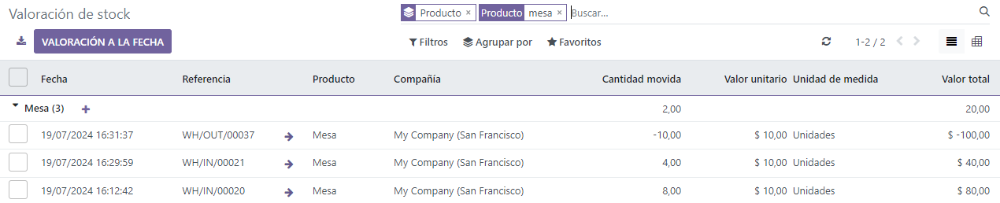
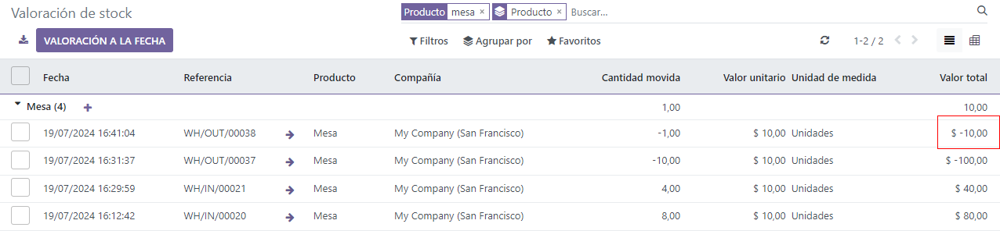
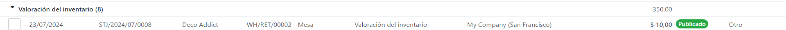

Costo promedio en bienes devueltos¶
La valuación del costo promedio (AVCO, por sus siglas en ingles) es un método de valuación del inventario que evalúa el costo en función del costo total de los bienes adquiridos o fabricados durante un periodo determinado y se divide entre el número total de artículos disponibles. La valuación del inventario se usa para:
reflejar el valor de los activos de la empresa;
llevar un seguimiento de la cantidad de bienes no vendidos;
tener en cuenta el valor monetario de los bienes que pueden generar ganancias;
tener un registro en el flujo de bienes a lo largo del trimestre.
Como la valuación usa el peso promedio para evaluar el costo, es un buen método para las empresas que venden solo algunos tipos de productos en grandes cantidades. En Odoo, este análisis de costos se actualiza de forma automática cada vez que se reciben productos.
Por lo tanto, cuando devuelve las entregas al proveedor, Odoo genera asientos contables en automático para reflejar el cambio en la valuación del inventario. Sin embargo, Odoo no actualiza el cálculo de esta valuación de forma automática porque puede crear posibles inconsistencias con la valuación del inventario.
Nota
Este documento trata sobre un caso de uso específico con fines teóricos. Consulte la documentación de la configuración de valoración de inventarios para obtener instrucciones sobre cómo configurar y utilizar AVCO.
Configuración¶
Para utilizar la valuación del costo promedio del inventario en un producto, vaya a y seleccione la categoría para la que usará la valuación. En la página de la categoría del producto, configure el Método de costo como Costo promedio (AVCO) y la Valuación del inventario en Automático.
Ver también
Uso de la valuación del costo promedio¶
El método del costo promedio ajusta la valuación del inventario al recibir los productos en el almacén. Esta sección explica su funcionamiento, pero si considera que no necesita leerla, vaya directamente a la sección caso de uso de devoluciones al proveedor.
Fórmula¶
Cuando llegan nuevos productos, el nuevo costo promedio de cada producto se vuelve a calcular con la siguiente fórmula:
Cantidad anterior: número de productos en existencias antes de recibir nuevos productos.
Costo promedio anterior: costo promedio calculado para un solo producto de la valuación de inventario anterior;
Cantidad entrante: número de productos que llegan en la nueva entrega;
Precio de compra: precio estimado de los productos a la recepción de los productos (algunas veces las facturas de proveedor llegan después). La cantidad no solo incluye el precio por los productos, sino también los costos adicionales como el envío, impuestos y los costos en destino. Al recibir la factura del proveedor, el precio se ajusta.
Cantidad final: la cantidad a la mano en las existencias después del movimiento de existencias.
Importante
Cuando los productos salen del almacén, el costo promedio no cambia. Si quiere saber más acerca de por qué la valoración del costo no se ajusta, consulte esta página.
Cálculo del costo promedio¶
Para entender cómo cambia el costo promedio de un producto con cada entrega, considere la siguiente tabla de operaciones del almacén y movimientos de existencias. Cada una es un ejemplo de cómo afecta la valuación del costo promedio.
Operación |
Valor de entrada |
Valor del inventario |
Cantidad a la mano |
Costo promedio |
|---|---|---|---|---|
$0 |
0 |
$0 |
||
Recibe 8 mesas a $10/por unidad |
8 * $10 |
$80 |
8 |
$10 |
Recibe 4 mesas a $16/por unidad |
4 * $16 |
$144 |
12 |
$12 |
Entrega 10 mesas |
-10 * $12 |
$24 |
2 |
$12 |
Exercise
Asegúrese de entender bien los cálculos de arriba revisando el ejemplo «recibe 8 mesas a $10/por unidad».
Inicialmente, las existencias del producto son 0 por lo que los valores también son $0.
En la primera operación del almacén, recibe 8 mesas a $10 cada una. El costo promedio se calcula usando la fórmula:
Ya que la cantidad entrante de mesas es
8y el precio de compra de cada una es de$10,El valor de inventario en el numerador se evalúa en
$80;$80se divide entre la cantidad total de mesas por almacenar,8;$10es el costo promedio de una sola mesa de la primera entrega.
Para verificar esto en Odoo, en la aplicación Compra, ordene 8 unidades de un nuevo producto, Mesa, sin movimientos de existencias previos, a $10 cada uno.
En el campo Categoría del producto de la tabla, en la pestaña Información general en el formulario del producto, haga clic en el icono de ➡️ (flecha) para abrir un Enlace externo para editar la categoría del producto. Establezca el Método de costo en Costo promedio (AVCO) y la Valuación del inventario en Automático.
Luego, regrese a la orden de compra. Haga clic en Confirmar orden y haga clic en Recibir productos para confirmar la recepción.
Luego, revise el registro de la valuación de inventario que se generó a la recepción de los productos en . Seleccione el menú desplegable para Mesa y observe la columna de Valor total para la capa de valuación (valuación del inventario en un periodo específico = cantidades a la mano * precio unitario). Las 8 mesas en existencias tienen un valor de $80.
Truco
Cuando el Método de costo de la categoría del producto está configurada como AVCO, entonces el costo promedio de un producto también aparece en el campo Costo en la pestaña de Información general en la página del producto.
Envío de productos (caso de uso)¶
Para envíos salientes, los productos salientes no tienen efecto en la valuación del costo promedio. Aunque la valuación del costo promedio no se vuelve a calcular, el valor del inventario se reduce porque el producto sale de las existencias y se envía a la ubicación del cliente.
Exercise
Para demostrar que la valuación del costo promedio no se vuelve a calcular, examinemos el ejemplo de «Envío de 10 mesas».
Puesto que se envían 10 mesas al cliente, la cantidad entrante es
-10. El costo promedio anterior ($12) se usa en lugar del precio de compra del proveedor.El valor del inventario entrante es
-10 * $12 = -$120;El valor del inventario anterior (
$144) se agrega al valor del inventario entrante (-$120), es decir,$144 + -$120 = $24;Solo
2mesas se quedan después de realizar el envío de10mesas de12. Por lo tanto, el valor del inventario actual ($24) se divide entre las cantidades a la mano (2);$24 / 2 = $12, que es el mismo costo en promedio que la operación anterior.
Para verificar esto en Odoo, venda 10 mesas en la aplicación Ventas, valide la entrega y luego revise el registro de valuación del inventario en . Como puede observar en la primera línea de la valuación, enviar 10 mesas reduce el valor del producto a -$120.
Nota: lo que no está representado en el registro de la valoración del inventario es el ingreso que se hace de esta venta, por lo que esta reducción no significa una pérdida para la empresa.
Devolver artículos al proveedor (caso de uso)¶
Ya que el precio que se le paga a los proveedores puede variar del precio en el que se valora el producto con el método AVCO, Odoo se encarga de los artículos devueltos de una manera específica.
Los productos se le devuelven a los proveedores al precio original de compra, pero:
La valuación interna del costo no cambia.
La tabal de ejemplo de arriba se actualiza de la siguiente manera:
Operación |
Cant.*Costo prom |
Valor del inventario |
Cantidad a la mano |
Costo promedio |
|---|---|---|---|---|
$24 |
2 |
$12 |
||
Devuelve 1 mesa que se compró a $10 |
-1 * $12 |
$12 |
1 |
$12 |
En otras palabras, Odoo percibe las devoluciones a los proveedores como otra forma de salida de un producto del almacén. Para Odoo, puesto que la mesa está valorada en $12 por unidad, el valor de inventario se reduce en $12 cuando se regresa el producto. El precio inicial de compra de $10 no está relacionado con el costo promedio de la tabla.
Example
Para regresar una sola mesa que se compró a $10, vaya al recibo en la aplicación Inventario de las 8 mesas compradas en el ejercicio 1 en la vista general de Inventario y haga clic en Recibos y seleccione el recibo que desea.
Luego, haga clic en Devolver en la orden de envío validada y modifique la cantidad a 1 en la ventana de transferencia contraria. Esto crea un envío saliente para la mesa. Haga clic en Validar para confirmar el envío saliente.
Regrese a para ver cómo el envío saliente redujo el valor del inventario en $12.
Eliminar errores de valuación de existencias en productos salientes¶
Es posible que haya inconsistencias en el inventario de una empresa cuando la valuación del costo promedio se vuelve a calcular en envíos salientes.
Para demostrar este error, la tabla de abajo muestra un escenario en el que se envía 1 mesa a un cliente y otra se le devuelve al proveedor al precio de compra.
Operación |
Cant*Precio |
Valor del inventario |
Cantidad a la mano |
Costo promedio |
|---|---|---|---|---|
$24 |
2 |
$12 |
||
Envío de 1 producto al cliente |
-1 * $12 |
$12 |
1 |
$12 |
Devolución de un producto que se compró en $10 |
-1 * $10 |
$2 |
0 |
$12 |
En la operación final de arriba, la valuación final del inventario para la mesa es de $2, aunque hay 0 mesas restantes en las existencias.
Método correcto
Utilice el costo promedio para valorar la devolución. Esto no significa que la empresa obtenga $12 por una compra de $10; el artículo devuelto por $10 está valorado internamente en $12. El cambio en el valor del inventario representa que un producto que vale $12 ya no se tiene en cuenta en los activos de la empresa.
Contabilidad anglosajona¶
Además de usar el método de valuación del costo promedio, las empresas que utilizan la contabilidad anglosajona tienen una cuenta de retención que lleva el seguimiento de la cantidad a pagar a los proveedores. Una vez que el proveedor entrega una orden, el valor del inventario incrementa en función del precio del proveedor de los productos que entraron a las existencias. La cuenta de retención (llamada entrada de existencias) se acredita y se concilia una vez que se recibe la factura del proveedor.
Ver también
La siguiente tabla indica los asientos contables y las cuentas. La cuenta de entrada de existencias almacena el dinero destinado al pago de los proveedores cuando aún no se ha recibido la factura del proveedor. Para equilibrar las cuentas al devolver productos que tienen una diferencia de precio entre el precio al que se valúa el producto y el precio por el que se compró, se crea una cuenta de diferencia de precio.
Operación |
Entrada de existencias |
Diferencia de precio |
Valor del inventario |
Cantidad a la mano |
Costo promedio |
|---|---|---|---|---|---|
$0 |
0 |
$0 |
|||
Recibir ocho mesas a $10 |
($80) |
$80 |
8 |
$10 |
|
Recibir factura de proveedor por $80 |
$0 |
$80 |
8 |
$10 |
|
Recibir cuatro mesas a $16 |
($64) |
$144 |
12 |
$12 |
|
Recibir factura de proveedor por $64 |
$0 |
$144 |
12 |
$12 |
|
Entregar 10 mesas al cliente |
$0 |
$24 |
2 |
$12 |
|
Devolver una mesa que se compró a $10 |
$10 |
$2 |
$12 |
1 |
$12 |
Recibir reembolso de proveedor $10 |
$0 |
$2 |
$12 |
1 |
$12 |
Recepción de productos¶
Resumen¶
Al recibir los productos, Odoo se asegura de que las empresas puedan pagar los bienes que compraron y mueve, de forma preventiva, un importe que coincide con el precio de los bienes recibidos a la :doc:`cuenta de pasivo </applications/finance/accounting/get_started/cheat_sheet>, Entrada de existencias. Una vez que reciben la factura, el importe en la cuenta de retención se transfiere a cuentas por pagar. Las transferencias a esta cuenta significan que ya se pagó la factura. Entrada de existencias se concilia al recibir la factura del proveedor.
La valuación de inventario es un método para calcular el costo interno de cada producto que se encuentra dentro de las existencias. Como hay una diferencia entre el precio al que se valua el producto y el verdadero precio al que se compró el producto, la cuenta de Valuación de inventario no está relacionada con las operaciones de abono y cargo de la cuenta Entrada de existencias.
Consulte el siguiente desglose para conceptualizar la información anterior.
Conciliación de cuentas al recibir productos¶
En este ejemplo, una empresa comienza con cero unidades de un producto, mesa, en sus existencias. Luego, reciben 8 mesas del proveedor:
La cuenta Entrada de existencias almacena
$80, que es lo que se adeuda al proveedor. El importe en esta cuenta no está relacionada con el valor del inventario.Se recibieron
$80en mesas (se hace un cargo a la cuenta de Valor del inventario por$80), yse debe pagar
$80por los productos recibidos (es decir, es un ingreso para la cuenta de Entrada de existencias por$80).
En Odoo¶
Odoo genera una asiento contable al recibir envíos que utilizan el método de costos AVCO. Configure una Cuenta de diferencia de precio, para esto seleccione el icono ➡️ (flecha) junto al campo Categoría de producto en la página del producto.
Cree una nueva Cuenta de diferencia de precio desde Propiedades de la cuenta. Escriba el nombre de la cuenta y haga clic en Crear y editar, después configure el tipo de cuenta como Gastos y haga clic en Guardar.
Reciba el envío en la aplicación Compras o Inventario y vaya a la aplicación . En la lista, busque la Referencia que coincide con la operación de recepción del almacén para el producto correspondiente.
Haga clic en la línea correspondiente a las 8 mesas. Este asiento contable muestra que al recibir las mesas, la cuenta Valuación de inventario aumentó $80. Por otro lado, se abonaron $80 a la cuenta Entrada de existencias (configurada de forma predeterminada como la cuenta Provisional de existencias (recibido)).
Conciliación de cuentas al recibir la factura del proveedor¶
En este ejemplo, una empresa comienza con cero unidades de un producto, mesa, en sus existencias. Luego, reciben 8 mesas del proveedor. Al recibir la factura del proveedor por estos productos:
Utilice
$80en la cuenta Entrada de existencias para pagar la factura. Esto se cancela y la cuenta ahora tiene$0.Se realiza un cargo por
$80a Entrada de existencias (para conciliar esta cuenta).Se abonan
$80a las cuentas por pagar. Esta cuenta almacena el importe que la empresa debe pagar a otras, por lo que el equipo de contabilidad usa este importe para girar cheques a los proveedores.
En Odoo¶
Una vez que el proveedor solicita el pago, vaya a la aplicación y seleccione la orden de compra de 8 mesas. Seleccione Crear factura en la orden de compra.
Vaya a la pestaña Apuntes contables para visualizar cómo se transfieren $80 de la cuenta de retención, Provisional de existencias (recibido), a Cuentas por pagar. Confirme la factura para registrar el pago al proveedor.
Al recibir un producto¶
En la tabla del ejemplo anterior, al entregar 10 productos a un cliente, no se toca la cuenta Entrada de existencias, pues no hay productos nuevos que entren. En resumen:
La valuación de inventario se acredita con
$120. Deducir de la valuación de inventario corresponde a productos con un valor de$120que salen de la empresa.Se hace un cargo a Cuentas por cobrar para registrar los ingresos por la venta.
En el asiento contable donde se factura a un cliente por 10 mesas, las cuentas Venta de productos, Impuestos recibidos y Cuentas por cobrar corresponden a la venta del producto. Cuentas por cobrar es la cuenta donde se recibirá el pago del cliente.
La contabilidad anglosajona reconoce el costo de los bienes vendidos (COGS) una vez que se realiza la venta. Los costos de mantener el producto dentro de las existencias no se contabilizan hasta que vende, desecha o devuelve el producto. Se cargan $120 a la cuenta de gastos para registrar los costos de almacenar 10 mesas durante este periodo.
Al devolver un producto¶
En la tabla del ejemplo anterior, al devolver un producto que se compró a $10 a un proveedor, la empresa espera recibir $10 en la cuenta Cuentas por pagar del proveedor. Sin embargo, se deben debitar $12 a la cuenta Entrada de existencias, pues el costo promedio es de $12 al momento de la devolución. Los $2 que restan se contabilizan en la Cuenta de diferencia de precio, que se configura en la Categoría de producto correspondiente.
Nota
El comportamiento de las cuentas de diferencia de precio varía según la localización. En este caso, la cuenta está destinada a almacenar las diferencias entre el precio del proveedor y los métodos automatizados de valuación de inventario.
En resumen:
Cargar
$10a la cuenta Entrada de existencias para mover la mesa de las existencias a la entrada de las existencias. Este movimiento indica que procesará la mesa para un envío saliente.Cargar
$2adicionales a Entrada de existencias para compensar la diferencia de precio.Abonar
$12a Entrada de existencias debido a que el artículo sale de las existencias.

Al recibir el reembolso del proveedor:
Abonar
$10a la cuenta Entrada de existencias para conciliar el precio de la mesa.Hacer un cargo por
$10a cuentas por pagar para que los contadores reciban y registren el pago en su diario.